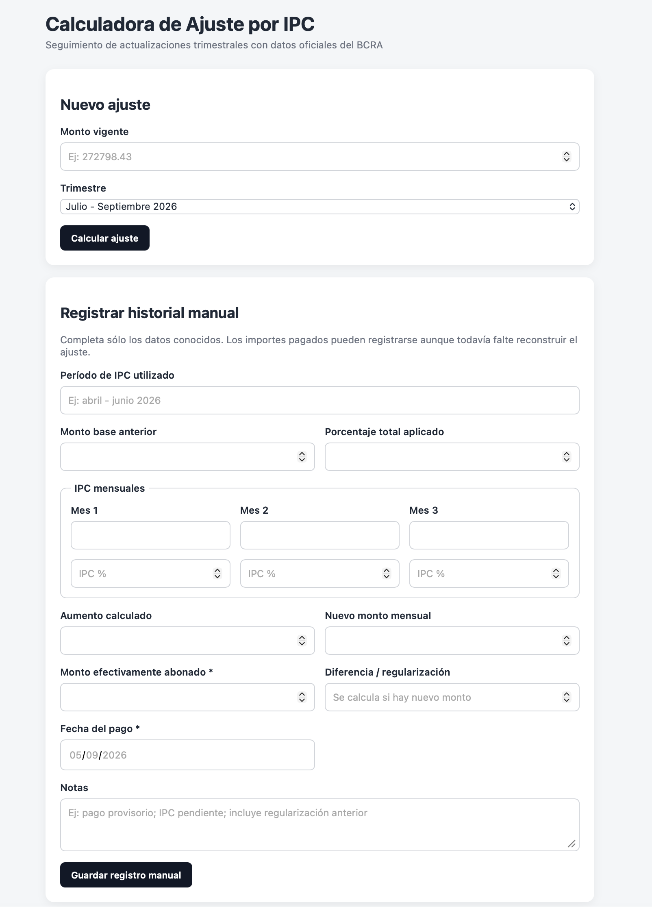

IPC Argentina
Aplicación web
Aplicación web que calcula ajustes periódicos mediante la inflación mensual publicada por el Banco Central de la República Argentina (BCRA). Obtiene el porcentaje acumulado por composición mensual y el nuevo monto. Consulta la API BCRA v4 (idVariable: 27), permite seleccionar períodos trimestrales y valida la disponibilidad de datos. Conserva un historial en localStorage con registros automáticos y manuales.
- HTML
- CSS
- JavaScript
- API BCRA v4